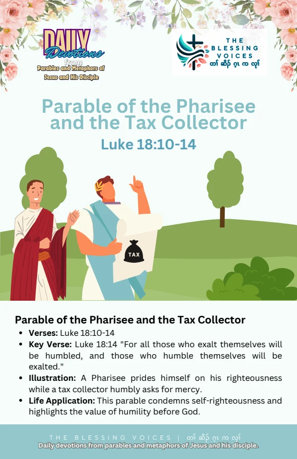

Introduction
Read this English paraphrase of the biblical passage alongside the original companion booklet. Context notes, devotional applications, reflection questions, and prayer are study aids rather than additional biblical text.
The Bible Story
Jesus told this parable to people who trusted in their own righteousness and looked down on others. A Pharisee and a tax collector went to the temple to pray. The Pharisee thanked God that he was unlike others and described his fasting and giving. The tax collector stood at a distance, would not lift his eyes, beat his breast, and asked God for mercy as a sinner. Jesus said the tax collector went home justified rather than the other, and taught that those who exalt themselves would be humbled while those who humble themselves would be exalted. This is a paraphrase of Luke 18:9–14.
Historical and Biblical Context
CONTEXT & DEVOTIONAL INTERPRETATIONJesus identifies self-righteousness and contempt as the target of this illustration. It should prompt self-examination rather than contempt for Pharisees or any religious group.
Spiritual Lessons
CONTEXT & DEVOTIONAL INTERPRETATIONThe contrast highlights humility, a plea for mercy, and the danger of measuring righteousness through comparison with others.
Practical Life Applications
CONTEXT & DEVOTIONAL INTERPRETATIONPray honestly about your own need for mercy. Notice and turn away from habits of comparing yourself favourably with other people.
Reflection Questions
- What difference do you notice between the two prayers?
- How does Jesus explain the outcome?
- Where do you need greater humility in prayer or relationships?
Closing Prayer
Lord God, help us hear your Word with humility. Guide our choices and teach us to respond with faith, mercy, and faithful action. Amen.
Continue your reflection.
Your free companion study booklet.
Download Free Booklet ↓PDF · Free download